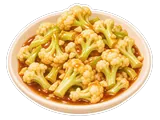
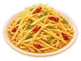
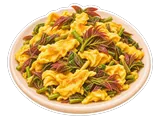
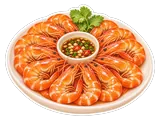
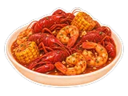
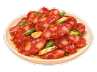
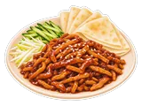
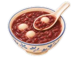
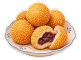
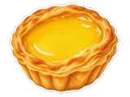

没找到「」
想吃的话，去心愿单告诉 Shara →
🥬
素菜
叶菜
蚝油生菜
手撕包菜
炝炒白菜
上汤娃娃菜
炒油菜花

炒花菜腐乳空心菜
清炒豆苗
茎叶瓜
素炒莴笋
素炒丝瓜
干煸四季豆
炒豆芽
西芹百合
芦笋炒肉/虾
青椒+豆豉
茄子苦瓜
蒜香烤茄子
香辣茄子
炒苦瓜
酿苦瓜
根茎瓜

醋溜土豆丝炒莲藕
烧南瓜
咸蛋黄焗南瓜
烧冬瓜
家常菜
西红柿鸡蛋
韭菜鸡蛋

香椿炒鸡蛋糖拌蒸芋头
🍜
面食主食
🍗
鸡鸭
🥩
牛羊
🐟
鱼虾
清蒸鲈鱼/其它

白灼虾红烧鱼
酸菜鱼
番茄带鱼
黄焖黄鳝
啤酒鱼
香煎鲫鱼
香煎带鱼
锡纸鲈鱼糖醋
烤鱼
烤黄鱼
空气炸锅鱼豆腐
剁椒鱼头
鱼头豆腐锅
鱼头汤（炖）
天妇罗
美乃滋炸虾球
蒜蓉龙虾

Hot n Juicy
🍖
猪
无锡糖醋小排
糖醋排骨 金黄
蒜香排骨
笋尖烧排骨
椒盐排骨
红烧肉+腐竹/鸡蛋
东坡肉
梅菜扣肉
芋头扣肉
粉蒸肉
蒸肉饼
卤肉/鸡蛋
叉烧
烤猪蹄
香辣美容蹄
西芹腊肉

煎香肠 整/切片香煎五花肉
炸莲藕丸子
炸藕盒
炸茄盒
油豆腐丸子
锅包肉
脆皮酥肉
烤猪排

京酱肉丝培根卷芦笋（烤）
培根卷金针菇
酸菜肉末
🍮
甜点
绿豆沙

红豆沙冰糖雪梨汤
白凉粉
龟苓膏
双皮奶
布丁（抹茶/椰香/芒果）
抹茶奶冻
Mochi
芝麻馅汤圆
糯米糍
南瓜饼

麻团 鸡蛋仔 芋泥 芋圆 香葱麻薯魔芋卷雪花酥
戚风蛋糕
抹茶戚风蛋糕卷
提拉米苏
泡芙

蛋挞 黄金糕 黄油曲奇 蛋黄酱肉松卷 Lemon Blueberry Cake 传统月饼（莲蓉/豆沙）冰皮月饼 奶黄
炸糕
绿豆糕
秋梨膏
炸香蕉
🥗
凉菜小吃
🍵
汤
莲藕排骨汤
萝卜排骨汤
海带排骨汤
筒骨汤
猪蹄黄豆汤
天麻猪脑汤
三黄鸡汤
乌鸡汤
松茸鸡汤
牛尾山药汤
羊肉萝卜汤
山药骨头汤
番茄骨头汤
丸子汤
蛋花紫菜汤
🥤
饮品
酸梅汤
小吊梨汤
400次咖啡
王老吉